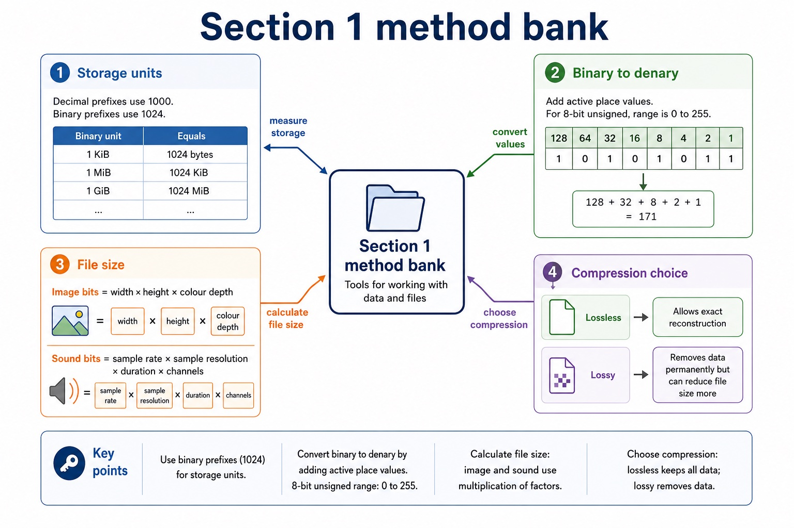

Quick route
Use the diagnostic, learning objectives, first worked example and foundation question. Stop once the learner can explain the central distinction accurately.
Cambridge AS9618 | Paper 1 | Section 1: Information representation
Flexible-depth lesson
S1.01 | Select what to omit, teach briefly or explore in depth.
Part 1 | optional depth
Check that you can use place value and distinguish a value from the way it is represented.
Give one accurate definition or method step before continuing. If it is missing, revisit only that prerequisite.
Part 2 | deliberately over-complete
Teach all points, or select only the ones this group needs. The list is intentionally fuller than a fixed lesson slot.
2 TiB drive: 2 TiB = 2 x 2^40 = 2,199,023,255,552 bytes. A 2 TB drive is 2,000,000,000,000 bytes, so the labels are not interchangeable.

Part 3 | select by learner need
Question 1. State the number of bytes represented by 1 GiB and explain why 1 GB represents a different number of bytes.
Answer: 1 GiB = 2^30 bytes / 1,073,741,824 bytes; gibi uses a binary power / multiples of 1024; 1 GB = 10^9 bytes / 1,000,000,000 bytes; giga uses a decimal power / multiples of 1000
Marking guidance: Do not accept 'GiB is bigger' without both numerical definitions.
Common error: For the command word state, perform that exact action; do not replace it with an unrelated fact.
Question 2. Convert 3,000,000 bytes to MB.
Answer: 3 MB using the decimal prefix mega; kilo, mega, giga and tera use powers of 1000.
Marking guidance: Award one mark for each distinct, technically accurate point or method step.
Common error: Do not repeat the same point in different words; each mark needs a separate idea or method step.
Question 3. Draw lines to match kibi, mebi, gibi and tebi to Ki, Mi, Gi and Ti.
Answer: kibi = Ki, mebi = Mi, gibi = Gi and tebi = Ti.
Marking guidance: Award one mark for each distinct, technically accurate point or method step.
Common error: Do not copy the worked example unchanged; transfer the method and check it against the new context.
| Reference | Marks | Command word | Question type |
|---|---|---|---|
| 9618/13/S/24 Q1(a) | 4 | complete | recall |
| 9618/11/W/24 Q1(a) | 1 | state | recall |
| 9618/12/S/24 Q7(a) | 1 | identify | calculate |
| 9618/12/W/23 Q3(a) | 1 | state | recall |
Index only: Cambridge question and mark-scheme wording is not reproduced on this public course page.
Part 4 | close when ready
Students often treat binary digits as decoration. Correction: every bit position has a value; if the position changes, the value changes.